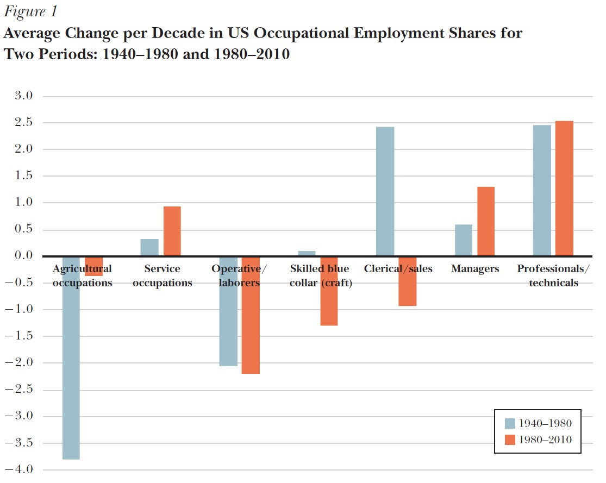
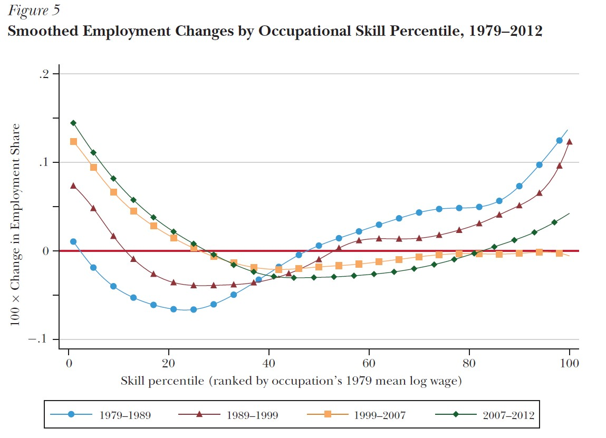

Why Are There Still So Many Jobs? The History and Future of Workplace Automation
The first point made by the author in the article is that although anxiety towards automation started a long time ago (example of 19th-century English textile artesian), and we are getting better at understanding it, it doesn’t change the fact that we are still afraid of technological progress today (1961’s article from TIME magazine). He also points out that journalists and even expert commentators tend to overstate the extent of machine substitution for human labour and overlook benefits automation causes for labour like increase in productivity, increases demand for labour and even raises wages. He states that the “polarization” was a good explanation for what was happening in the labour market in recent years, but it might not be the case anymore. The last point made by the author is that human work is increasing in value as the type of work people do nowadays is increasingly the type of work machines are currently incapable of doing.
How Automation and Employment interact
An important point made by Author is that tasks that cannot be substituted by automation are generally complemented by it. The complementation of tasks indicates that some steps of the process that are routine and can be automatized, so the human labourer can focus on the steps that need their attention instead of repetitive functions that can be handled by machines (ATM and real bank tellers’ example). He suggests three main factors that affect automation effects:
- Type of task – if the tasks a worker supplies are complemented by automation then he will benefit from it, but not if the tasks he supplies are substituted.
- The elasticity of labour supply - if the tasks that workers supply are widely available the flow of new entrants will temper any wage gains.
- Demand effect – the output elasticity of labour supply combined with income elasticity can either amplify or dampen the gains from automation.
The downside of rapid automation as we have seen is that it might create challenges that require policymakers to find an appropriate response.
Polarization in the US Labour Market
Based on previous studies regarding the US labour market Autor links decreasing the price of computers to increasing automation in handling explicit, codifiable tasks. However, not all tasks can be substituted by machines as some of them are not codifiable because of their tacit nature. To try and understand why this happens Autor explains Polanyi's paradox telling us that “we know more than we can tell”. He doesn’t explain it extensively, but it helps to explain the polarization of employment. Figure 1 pictures the Polarization in the US labour market.

Does Employment Polarization Lead to Wage Polarization?
IT and automation should complement workers performing abstract task intensive jobs. On the other hand, IT substitutes for many support occupations that these professions used to employ. Autor explains “wage polarization” differently than other authors. He says that low-income workers’ wages will increase as a reward for not entering other sectors of the economy. Thus, while IT has a strong contribution to employment polarization, we generally wouldn’t expect corresponding wage polarization.
The Recent Slowdown in the Growth of High-Skill Occupations
As Figure 5 shows we can see a decrease in the growth of high-skill occupations in recent years. This is consistent with Autor’s statement that employment polarisation might be coming to its end. Autor states that “the huge falloff in information investment may have dampened innovative activity and demand for high-skill workers more broadly”. Explanations provided for this include the dot-com bubble, which decreased private investments in information processing equipment and software from 5% of US GDP to 3,5%, and the housing market crisis of 2008 which decreased investments even further.

Polanyi’s paradox: Will It Be overcome?
Autor argues that the literature he used regarding Polanyi's paradox – we know more than we can say – suggests that it will not be overcome. This is because of the very nature of tacit knowledge. Tacit knowledge is difficult, if not impossible to codify for machines to understand. Although, he indicates that there are two possible ways for engineers to design machines that “do not know the rules” of the tasks they are supposed to complete;
- Environmental control – where people modify the environment in which automation occurs for it to be more efficient
- Machine learning – where people attempt to make machines learn by themselves and to start understanding tacit rules
Conclusion
Putting everything together, Autor states that “employment polarization will not continue indefinitely”. He argues that this puts pressure on the policymakers to ensure an appropriate policy response. While some of the current middle-wage jobs can be subitized (what do you mean here?) by automation, many will still require a mixture of tasks from across the skill spectrum. He links the response that policymakers should undertake with the educational system, where future workers need to be taught skills that are explicit to humans. This hopefully will allow them to complement the automation and result in a positive relationship between workers and machines.
Photo from: Unsplash
Original Article: Autor, David (2015): “Why are there Still so Many Jobs? The History and Future of Workplace Automation”, Journal of Economic Perspectives, 29(3), pp. 3-30.